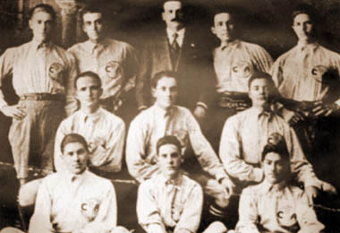

Fue en el año 1916 cuando Rafael Garza Gutiérrez y su primo Germán Núñez Cortina, adolescentes de trece años, estudiantes del Colegio Mascarones y quienes jugaban futbol todos los días en los recreos, decidieron crear un equipo con los mejores jóvenes de su escuela. Ambos convocaron en la escuela a una reunión vespertina, en casa de la tía de Germán, la señora Calixta Cortina, conocida como la “tía Calita”. Asistieron aproximadamente trece jovencitos a la primera cita.
Se pusieron de acuerdo y al poco tiempo, el día 12 de Octubre de 1916 en los llanos de la Condesa se congregaron para discutir el nombre del nuevo conjunto, puesto que para el uniforme ya habían decidido adoptar el azulcrema del equipo “Récord” por considerarlo hermoso y diferente a los ya existentes. De hecho, llegaron a dicha reunión ya todos uniformados, siendo testigo de honor el profesor Cenoz.
Para el nombre, hubo muchas propuestas, pero al final, ganó la de Pedro “Cheto” Quintanilla, quién sugirió el nombre de “AMÉRICA” porque ese día se celebraba el descubrimiento del continente. Así mismo, el propio Quintanilla, quien era un extraordinario dibujante, acompañó su propuesta con un bosquejo del continente americano con los colores azulcremas y con las iniciales del nuevo equipo que acababa de nacer: ‘C’ de club, y ‘A’ de América.
